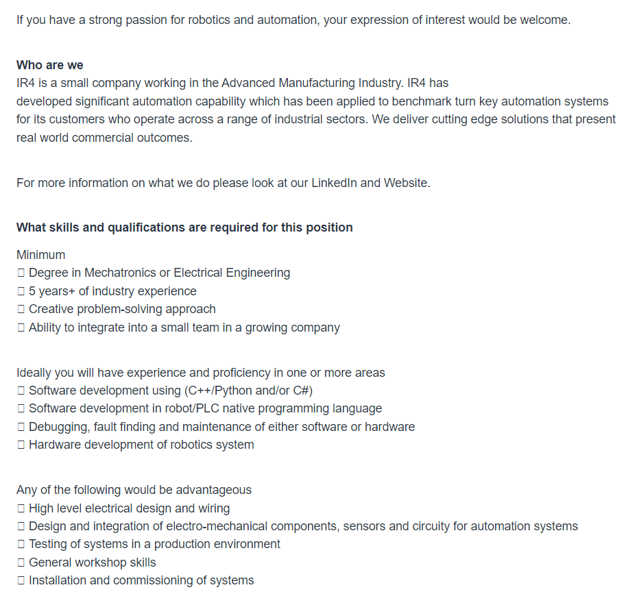

Ideal Job
The
job advertisement itself. Include a link, and a snapshot of it (in
case the link expires before the
assignment
deadline).
Mechatronics/Software/ Robotics Engineer Job in Brisbane QLD - SEEK

1/
A
description (in your own words) of the position, and particularly
what makes this position appealing to you.
It is a position requiring a broad range of skills in development of the hardware and software needed to supply industrial automation solutions. All facets of the system life-cycle is covered.
2/
A
description (in your own words) of the skills, qualifications and
experience required for the position.
Qualifications required for the position include a degree in Mechatronics or Electrical engineering together with at least 5 years experience working in the automation field.
Personal skills will include an imaginative outlook in problem solving and the ability to work well in a team environment.
3/
A
description (in your own words) of the skills, qualifications and
experience you currently have.
I have skills in programming including Python, Java and C++, including attainment of successful completion of some tertiary subjects in those languages. I also have informal, though proven experience in developing some small automation solutions on Raspberry Pi and Arduino platforms. For example I have developed a “piggy” back system to manipulate some shifting characteristics in my cars automatic transmission.
4/
A
plan describing how you will obtain the skills, qualifications and
experience required for the position, building on those you have now.
This need not be greatly detailed, (and will probably change
significantly over time anyway), but try to be as specific as you
can.
Well,
time is against me on this:-). Hopefully I can complete an IT degree
which should cover coding, system development and life-cycle
maintenance and project management and
teamwork facets.
It is highly unlikely I can complete a mechatronics degree, so I
would need to rely on my experience as a hobbyist
with limited industry experience.